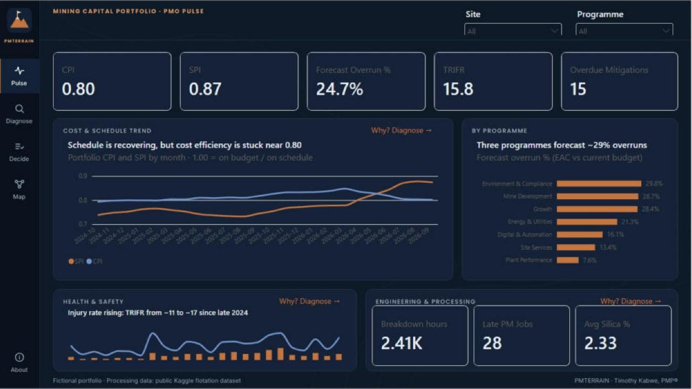

Timothée Kabwe Zumbi
Project & Data Professional, certifié PMP® Project & Data Professional, PMP® certified
Cinq ans dans les mines du Copperbelt. Je pilote des projets, puis je transforme leurs données en tableaux de bord Power BI et en analyses SQL que la direction peut vérifier.
Five years in the Copperbelt mining industry. I deliver projects, then turn their data into Power BI dashboards and SQL analyses that management can verify.
ProjetsProjects

-
Mining PMO Portfolio Dashboard
Power BI, DAX, Power Query, Python
Un tableau de bord pour décider, projet par projet, quoi accélérer, redresser ou arrêter. 32 projets, 6 pages, 17 relations dans un modèle en étoile. Chaque KPI est vérifié par un calcul Python indépendant.
A dashboard to decide, project by project, what to accelerate, recover or stop. 32 projects, 6 pages, 17 relationships in a star schema. Every KPI is checked by an independent Python calculation.
-
Project Controls in SQL
SQLite, CTE, window functions, Python
Les mêmes indicateurs recalculés uniquement en SQL : valeur acquise, dépassement prévisionnel, règle de décision, risques en retard, sécurité, 9 contrôles qualité. 17 chiffres sur 17 concordent avec le tableau de bord.
The same indicators recalculated in SQL only: earned value, forecast overrun, decision rule, overdue risks, safety, 9 data-quality checks. 17 out of 17 figures match the dashboard.
-
Copperbelt GeoAI
Python, scikit-learn, Streamlit
Une application qui repère les districts miniers atypiques de la RDC avec l'algorithme Isolation Forest, comme premier tri pour l'exploration cuivre-cobalt. Le README explique ses limites.
An app that flags outlying DRC mining districts with the Isolation Forest algorithm, as a first screening step for copper-cobalt exploration. The README explains its limits.
-
Tax Clarity
React, TypeScript, Vite
Un calculateur d'impôt sur le revenu congolais qui compare l'ancien régime (IPR) et le nouveau (IRPP). Les données restent dans le navigateur et ne sont envoyées à aucun serveur.
A Congolese income tax calculator that compares the old regime (IPR) with the new one (IRPP). Data stays in the browser and is never sent to a server.
-
Excel Sales Analytics
Excel
Analyse des ventes de l'entreprise Atliq et tableau de bord Excel.
Sales analysis for Atliq and an Excel dashboard.
ProfilAbout

Chez Kamoa Copper SA (groupe Ivanhoe Mines), je coordonne des projets d'infrastructure : je consolide les dossiers, je vérifie les devis, je suis les achats et je signale les retards. Je rends compte à la direction avec Power BI et Excel, et j'automatise les suivis avec Power Automate et SharePoint.
At Kamoa Copper SA (Ivanhoe Mines group), I coordinate infrastructure projects: I consolidate files, check quotations, follow procurement and flag delays. I report to management with Power BI and Excel, and automate follow-ups with Power Automate and SharePoint.
Je suis aussi instructeur PMI agréé (PMP® et CAPM®) et j'étudie un MBA en Data Science Management.
I am also a PMI Authorized Training Partner Instructor (PMP® and CAPM®) and I am studying for an MBA in Data Science Management.
- ProjetProject
- Contrôle de projets, valeur acquise (CPI, SPI, EAC), gouvernance PMO, MS Project, Primavera P6Project controls, earned value (CPI, SPI, EAC), PMO governance, MS Project, Primavera P6
- DonnéesData
- Power BI, DAX, Power Query, SQL, Python (pandas), Excel
- Outils et languesTools and languages
- SharePoint, Power Automate. Français (natif), anglais et swahili (courants)SharePoint, Power Automate. French (native), English and Swahili (fluent)
ParcoursExperience
-
Déc. 2021 à aujourd'huiDec 2021 to present
Officer, IT Site Support & Project Expeditor
Kamoa Copper SA (Ivanhoe Mines), Kolwezi
Projets d'infrastructure (fibre, LAN, Wi-Fi) du cadrage à la mise en service. Planification MS Project et Primavera P6, reporting Power BI et Excel.
Infrastructure projects (fibre, LAN, Wi-Fi) from scope definition to commissioning. MS Project and Primavera P6 planning, Power BI and Excel reporting.
-
Nov. 2024 à aujourd'huiNov 2024 to present
Volunteer Project Manager & Certification Manager
PMI DRC Chapter
A mené le programme de certification PMP® KCC17726 : 95 participants, 4 cohortes, budget de 171 000 USD, du cadrage à la clôture.
Led the KCC17726 PMP® certification program: 95 participants, 4 cohorts, USD 171,000 budget, from charter to closure.
-
Mars 2023 à déc. 2025Mar 2023 to Dec 2025
IT Consultant & Microsoft Trainer (part-time)
Prtech-Group Africa, Lubumbashi / Kolwezi
Formations Microsoft 365, Excel et Power BI, conseil en transformation numérique, applications de gestion de stock et de facturation.
Microsoft 365, Excel and Power BI training, digital transformation consulting, stock management and invoicing applications.
-
En coursCurrent
PMI Authorized Training Partner Instructor (PMP® & CAPM®)
SORACERT
-
2019 – 2021
DébutsEarly career
Stagiaire IT chez Kamoa Copper (mars à septembre 2021). Spécialiste digital freelance chez LUALABANEWS.NET (2019 à 2021).
IT intern at Kamoa Copper (March to September 2021). Freelance digital specialist at LUALABANEWS.NET (2019 to 2021).
FormationEducation
- MBA Data Science Management, TECH Universidad Tecnológica, Mexico
- Licence en administration réseaux et systèmesBachelor's in Network & System Administration, ESISALAMA (UDBL)
Certifications
- Project Management Professional (PMP®), PMI
- PMI Authorized Training Partner Instructor (PMP® & CAPM®)
- Microsoft Certified Trainer, AB-731 AI Transformation Leader
- ITIL® 4 Foundation, Lean Six Sigma White Belt
- PL-300 Power BI Data Analyst
Parlons de votre projetLet's talk about your project
timothekabwe@gmail.com- GitHub
- CV (PDF)CV (PDF)
- Kolwezi, Lualaba, RDCDRC